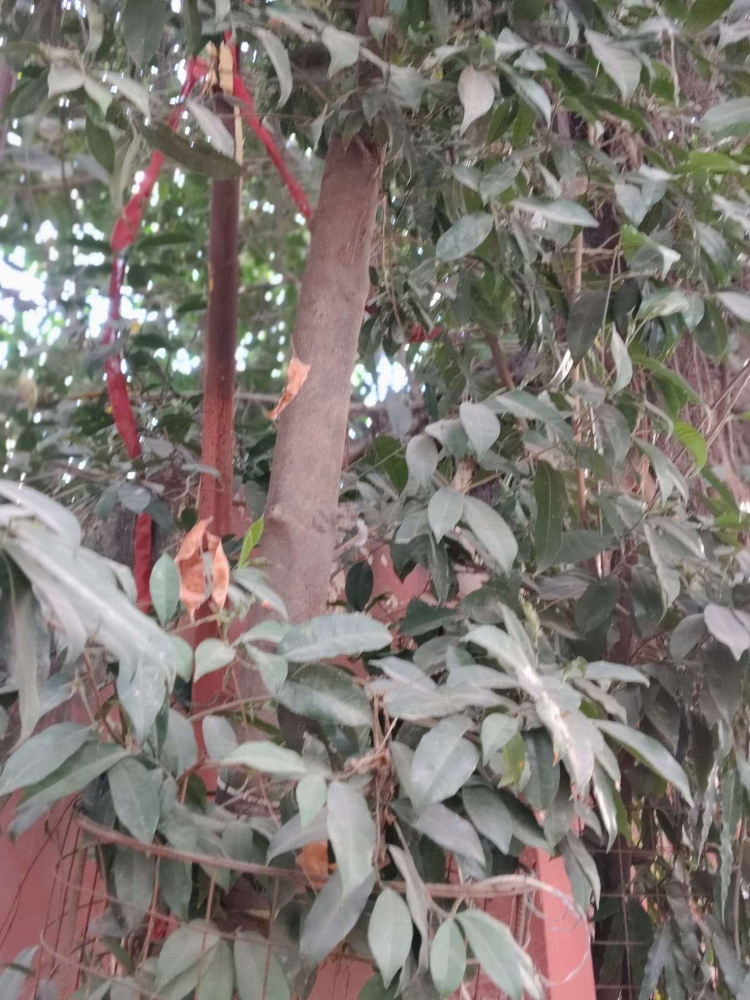

TERAPANTH JAIN VIDYALAYA MATRICULATION HIGHER SECONDARY SCHOOL - SOWCARPET - CHENNAI - 01

COMMON NAME:
Kamala Tree
BOTANICAL NAME:
Mallotus philippensis
HABITAT:
Commonly found in rainforest margins, disturbed areas, and mixed forests.
SIZE:
Small to medium-sized tree, typically 6–10 meters tall.
FLOWERS:
Male and female flowers occur on separate trees. Male flowers are whitish-yellow, while female flowers are borne in racemes.
USES OF THE KAMALA TREE:
- Fruits have been traditionally used to dye silk and wool.
- Used in medicine for treating ailments like bronchitis, abdominal diseases, and skin infections.
- The seed oil is used in paints, varnishes, and cosmetics. The seed cake is used as manure.
- Serves as a preservative for vegetable oils and dairy products.